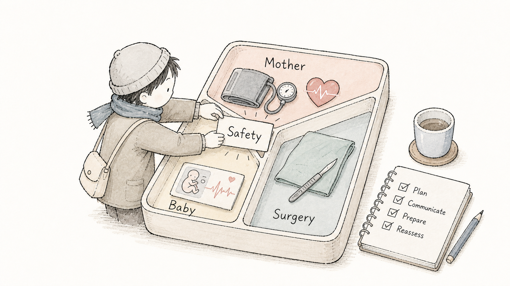
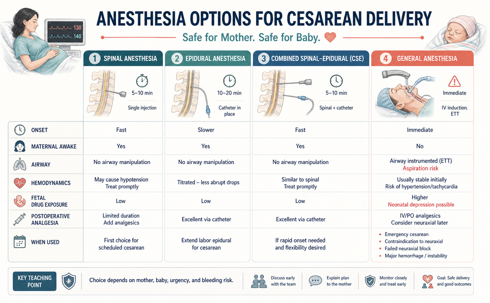
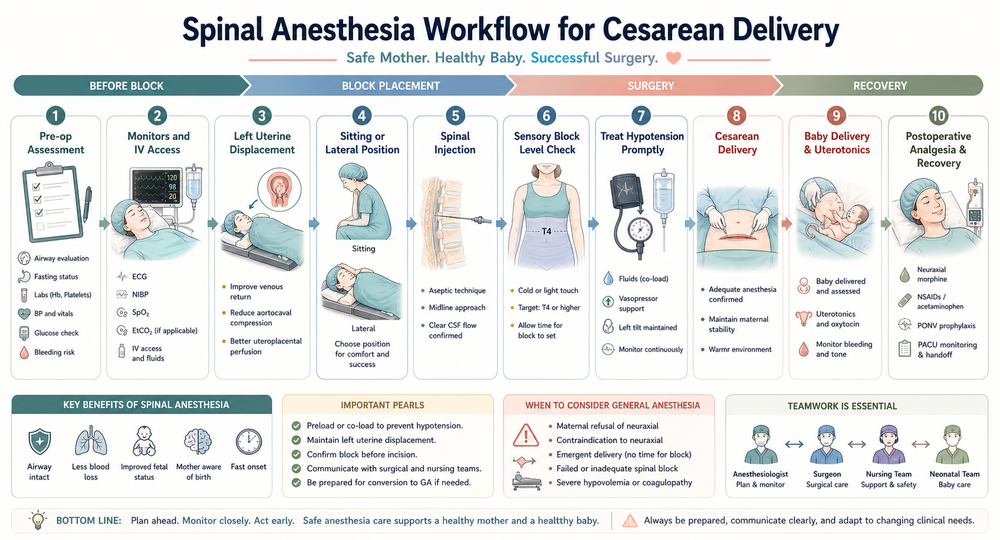
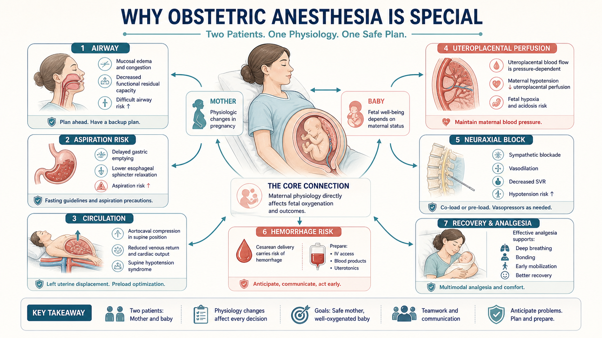
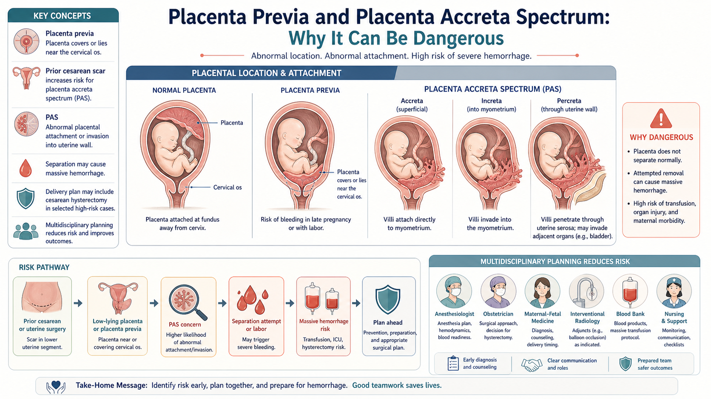
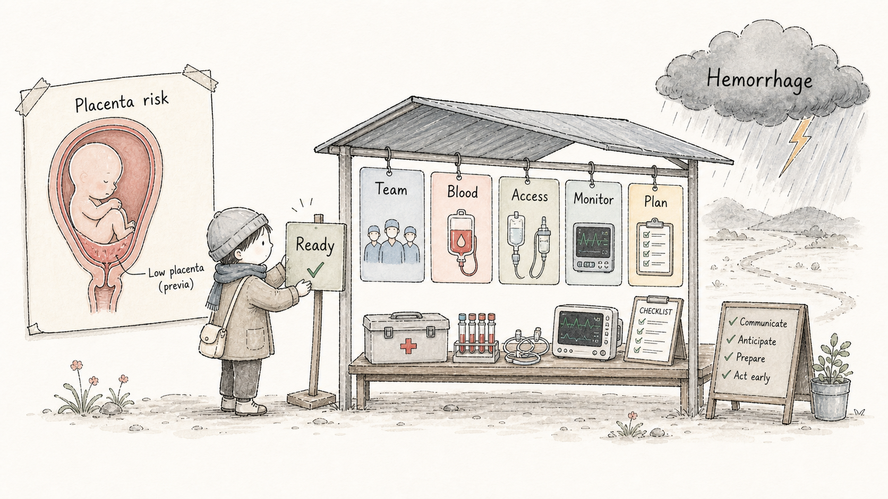
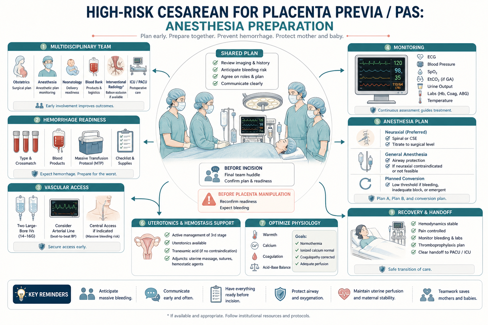
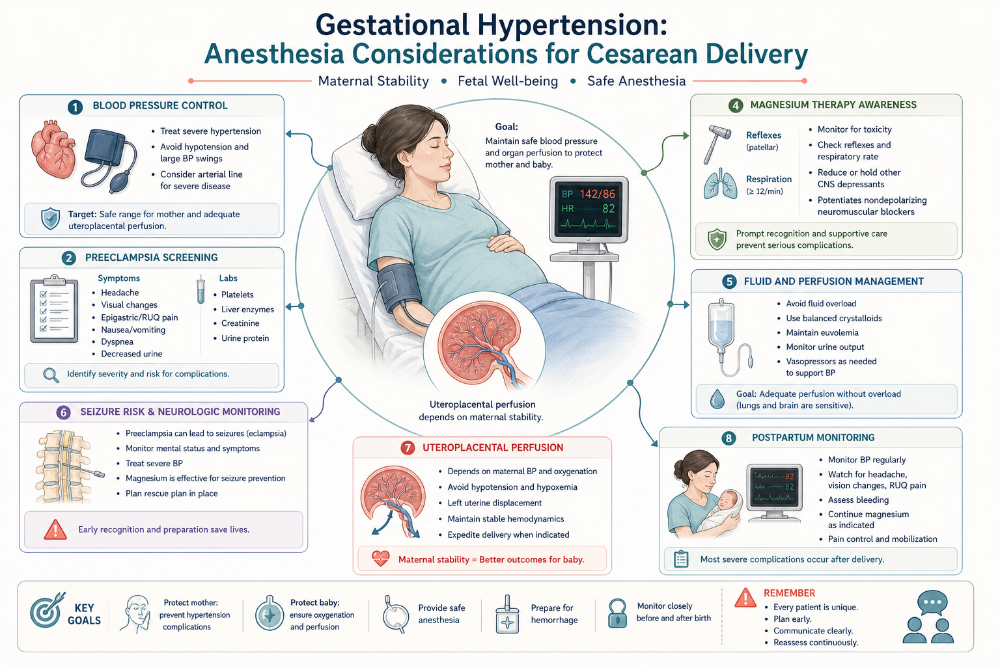
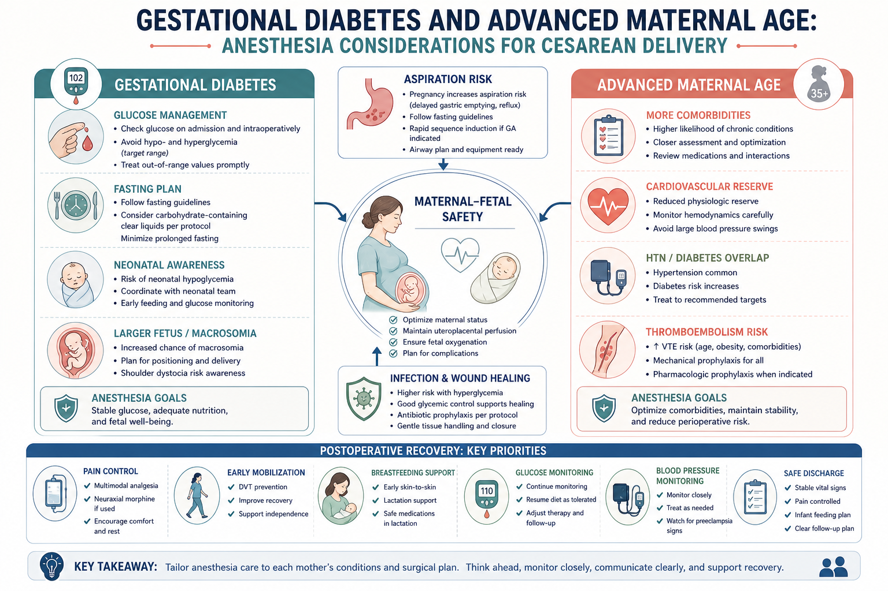
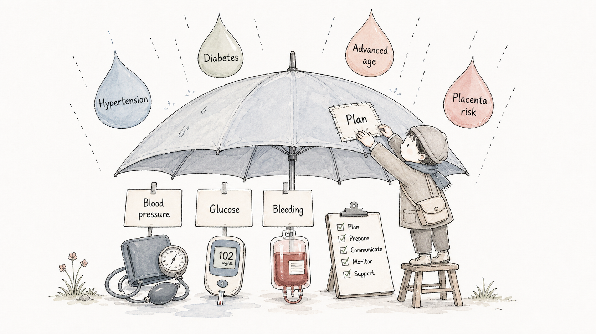

Case Frame
今日主题：产科麻醉照顾的是“两位病人”Today's Theme: Obstetric Anesthesia Cares for Two Patients
对 Cornell 大一学生来说，第一步不是记住药名，而是建立产科麻醉的基本框架：妈妈的安全、胎儿/新生儿安全、手术顺利进行，三者同时存在。
For a first-year Cornell student, the first step is not memorizing medications. It is building the obstetric anesthesia frame: maternal safety, fetal/neonatal safety, and surgical success all matter at the same time.

Anesthesia Options
剖宫产常见麻醉方式：椎管内为主，全麻用于特定场景Cesarean Anesthesia Options: Neuraxial First When Appropriate, GA for Specific Situations
择期剖宫产常用腰麻、硬膜外或腰硬联合。优点是母亲清醒、避免气道操作、胎儿暴露较少，并可提供术后镇痛。全身麻醉常见于紧急情况、椎管内禁忌、椎管内失败、严重出血风险或特殊临床判断。
Scheduled cesarean delivery commonly uses spinal, epidural, or combined spinal-epidural anesthesia. Advantages include an awake mother, avoidance of airway manipulation, limited fetal drug exposure, and postoperative analgesia. General anesthesia is used for emergencies, contraindications to neuraxial anesthesia, failed neuraxial block, major hemorrhage risk, or specific clinical judgment.

Spinal Workflow
腰麻剖宫产流程：从阻滞平面到低血压处理Spinal Cesarean Workflow: From Block Level to Hypotension Management
腰麻流程包括术前评估、监测、静脉通路、左侧子宫移位、穿刺给药、阻滞平面确认、低血压预防和处理、胎儿娩出、子宫收缩药、术后镇痛和恢复观察。
The spinal workflow includes pre-op assessment, monitors, IV access, left uterine displacement, spinal injection, block level assessment, prevention and treatment of hypotension, delivery, uterotonics, postoperative analgesia, and recovery observation.

Why Obstetric Anesthesia Is Special
孕妇麻醉为什么特殊：母体变化会影响胎儿Why Obstetric Anesthesia Is Special: Maternal Physiology Affects the Baby
孕妇有气道水肿和误吸风险，仰卧位可出现主动脉腔静脉受压，椎管内麻醉可因交感阻滞引起低血压。母体血压和氧合会影响子宫胎盘灌注，因此产科麻醉要同时照顾母体和胎儿。
Pregnancy brings airway edema and aspiration risk. Supine positioning may cause aortocaval compression, and neuraxial anesthesia can cause hypotension through sympathetic blockade. Maternal blood pressure and oxygenation affect uteroplacental perfusion, so obstetric anesthesia protects both mother and baby.

Placenta Previa / PAS
凶险性前置胎盘：危险在于“位置低 + 瘢痕 + 植入风险 + 大出血”High-Risk Placenta Previa: Low Placenta, Scar, PAS Concern, and Hemorrhage Risk
“凶险性前置胎盘”通常指有既往剖宫产等瘢痕背景、胎盘位置低或覆盖宫颈内口，并高度担心胎盘植入谱系 `placenta accreta spectrum, PAS` 的情况。关键危险是胎盘不能正常剥离，可能导致严重出血。
High-risk placenta previa often refers to a low-lying or covering placenta in the setting of a prior cesarean scar, with concern for placenta accreta spectrum (PAS). The key danger is abnormal placental attachment or invasion, which can lead to severe hemorrhage when separation is attempted.


High-Risk Preparation
凶险性前置胎盘的麻醉准备：先把系统搭好Anesthesia Preparation for High-Risk Placenta Previa: Build the System First
准备重点包括多学科团队、血源准备、大静脉通路、必要时有创动脉压监测、快速输血预案、保温、凝血评估、尿量监测、术后 PACU/ICU 计划，以及与产科、新生儿、输血科等团队的明确沟通。
Preparation includes multidisciplinary planning, blood availability, large-bore IV access, arterial pressure monitoring when indicated, massive transfusion readiness, warming, coagulation assessment, urine output monitoring, PACU/ICU planning, and clear communication with obstetrics, neonatology, and the blood bank.

Comorbidities
合并妊娠期高血压、糖尿病和高龄：风险不是相加，而是相互影响Gestational Hypertension, Diabetes, and Advanced Maternal Age: Risks Interact
妊娠期高血压Gestational hypertension
麻醉关注血压波动、子痫前期筛查、血小板和凝血、肝肾功能、镁剂使用、容量管理和术后血压监测。椎管内麻醉前尤其要确认血小板/凝血安全性。
Anesthesia concerns include blood pressure swings, preeclampsia screening, platelets and coagulation, liver and renal function, magnesium therapy, fluid balance, and postpartum blood pressure monitoring. Before neuraxial anesthesia, platelet and coagulation safety must be assessed.

妊娠期糖尿病和高龄产妇Gestational diabetes and advanced maternal age
糖尿病关注血糖、禁食、误吸、新生儿低血糖、感染和切口恢复。高龄产妇可能合并更多基础疾病、心血管储备下降、血栓风险和恢复风险更高，需要更细的围术期评估。
Gestational diabetes raises concerns about glucose, fasting, aspiration, neonatal hypoglycemia, infection, and wound healing. Advanced maternal age often comes with more comorbidities, lower cardiovascular reserve, thromboembolism awareness, and recovery concerns, requiring careful perioperative assessment.


Hemorrhage Response
产科大出血：识别早、叫人快、系统启动Obstetric Hemorrhage: Recognize Early, Call for Help, Activate the System
凶险性前置胎盘最大的麻醉挑战之一是出血速度快、失血量大。麻醉医生要早识别、早沟通、维持通路和监测，按本院流程启动输血和凝血支持，同时防止低体温、酸中毒和凝血障碍形成恶性循环。
One major anesthesia challenge in high-risk placenta previa is rapid, large-volume bleeding. The anesthesiologist must recognize bleeding early, communicate quickly, maintain access and monitoring, activate transfusion and coagulation support according to local protocols, and prevent the spiral of hypothermia, acidosis, and coagulopathy.

Observer Mode
学生现场观察清单Student Observation Checklist
Debrief
术后五问：从观摩走向理解Five Post-Case Questions: From Observation to Understanding
每台手术后用 2 分钟回答：今天为什么选这种麻醉？阻滞或全麻保护了什么？这个患者最主要的出血风险是什么？高血压、糖尿病、高龄分别改变了哪些麻醉注意事项？交接时最需要提醒 PACU 什么？
After the case, answer in two minutes: Why was this anesthetic chosen? What did the block or general anesthesia protect? What was the main bleeding risk? How did hypertension, diabetes, and advanced maternal age change the anesthesia plan? What should PACU be told first?